Working with MongoDB
Visual Studio Code has great support for working with MongoDB databases, whether your own instance or in Azure with MongoDB Atlas. With the MongoDB for VS Code extension, you can create, manage, and query MongoDB databases from within VS Code.
Install the extension
MongoDB support for VS Code is provided by the MongoDB for VS Code extension. To install the MongoDB for VS Code extension, open the Extensions view by pressing kb(workbench.view.extensions) and search for 'MongoDB' to filter the results. Select the MongoDB for VS Code extension.
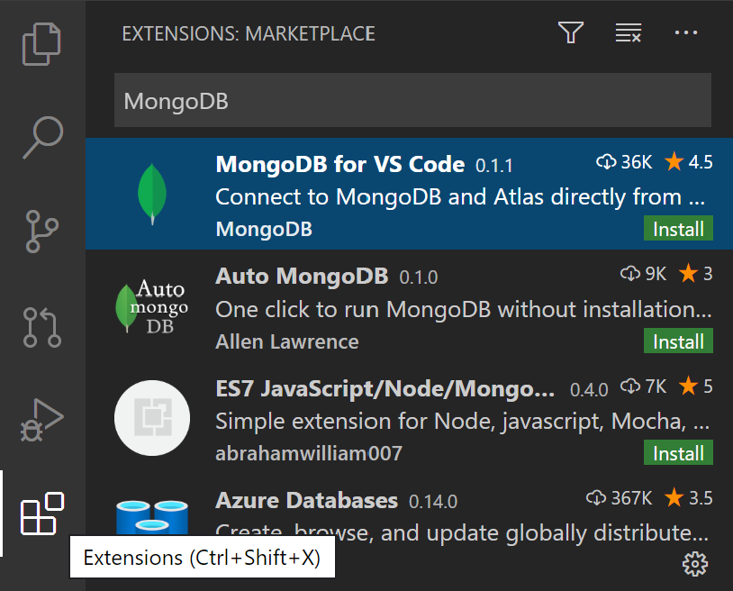
Connect to MongoDB
Once you've installed the MongoDB for VS Code extension, you'll notice there is a new MongoDB Activity Bar view. Select the MongoDB view and you'll see the MongoDB Explorer.
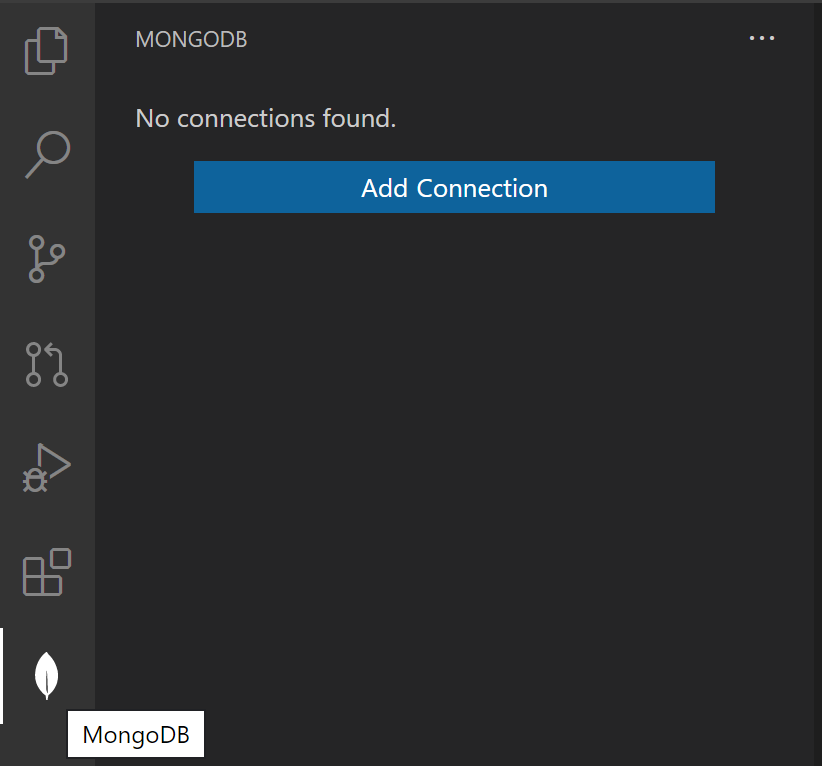
To connect to a MongoDB database, select Add Connection and enter the connection details for the database then Connect, the default is a local MongoDB server at mongodb://127.0.0.1:27017. You can also enter a connection string, click the "connect with a connection string" link and paste the connection string.
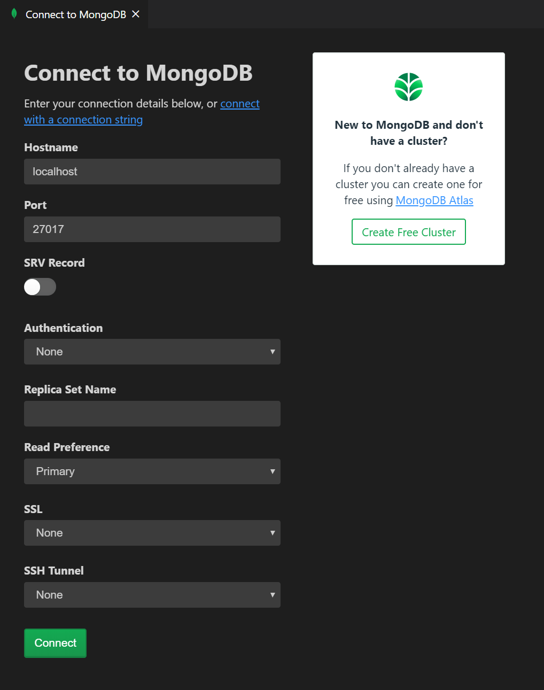
Note: Make sure your MongoDB server (mongod.exe) is running if you are connecting to a local MongoDB server.
Once attached, you can work with the MongoDB server, managing MongoDB Databases, Collections, and Documents.
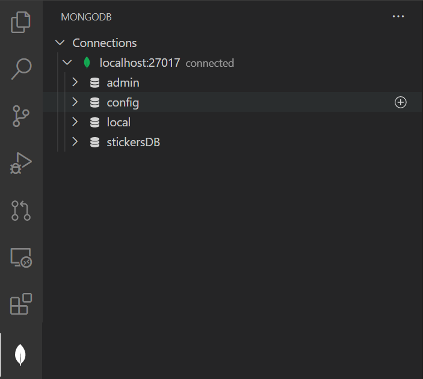
You can expand databases to view their collections with their schema and indexes and you can select individual MongoDB Documents to view their JSON.
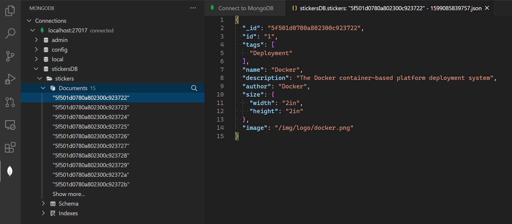
You can also attach a MongoDB shell to the active connection, simply by right-clicking on the connection itself.
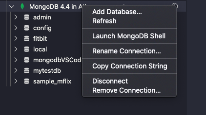
Note: Make sure the MongoDB shell (
mongoormongosh) is installed and is on your path. In the extension's settings, you can choose which shell you are using.
MongoDB Commands
There are MongoDB specific commands available in the VS Code Command Palette (kb(workbench.action.showCommands)) as well as through Explorer context menus.
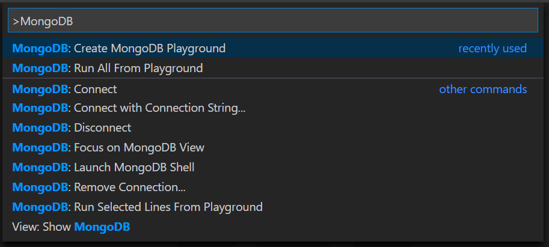
Using Playgrounds
One of the most powerful features of the VS Code MongoDB integration is Mongo Playgrounds. Playgrounds let you create, run, and save MongoDB commands from a VS Code editor. Create a new playground with the MongoDB: Create MongoDB Playground command.
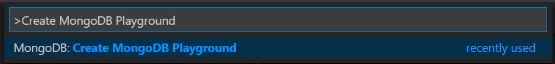
In a playground, you can reference MongoDB entities and commands and you get rich IntelliSense as you type. Playgrounds are useful for prototyping database operations and queries. Execute selected lines in the playground queries with the MongoDB: Run Selected Lines From Playground command.
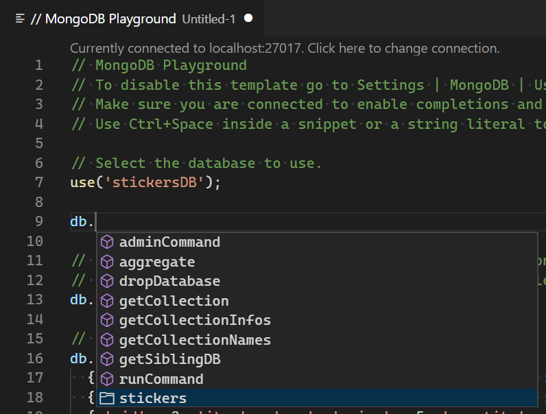
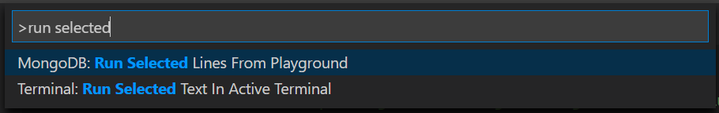
MongoDB on Azure
You can easily create a MongoDB cluster on Azure for Free with MongoDB Atlas.
Choose Create a New Cluster from the dashboard and choose Azure as the Cloud Provider. Once the cluster is created, connect to using the connection string provided by MongoDB Atlas.
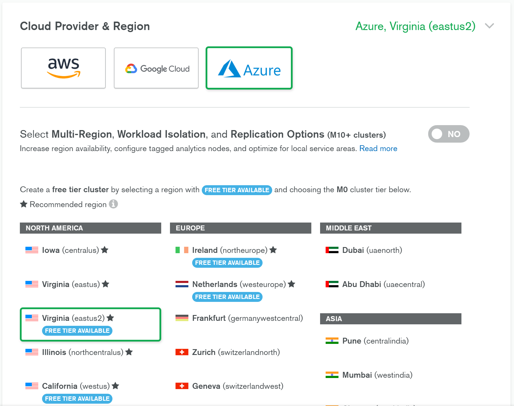
Next steps
- Azure Extensions - The VS Code Marketplace has hundreds of extensions for Azure and the cloud.
- Deploying to Azure - Learn step-by-step how to deploy your application to Azure.
- Working with Docker - Put your application in a Docker container for easy reuse and deployment.